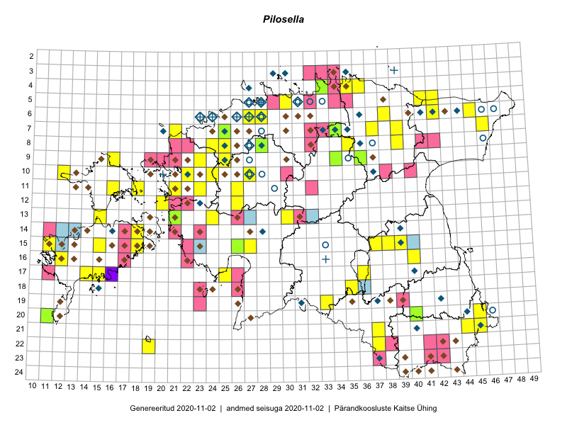

Pilosella — karutubakas
Kaardile koondatud taksonid: Pilosella (139)

Kaart põhineb 139 kirjel, neist:
vaatlusi 73
eksemplare 66
Kaasaegsed1 leiukohad asuvad 99 ruudus.
Andmed “Eesti taimede levikuatlasest”,2 sulgudes ruutude arv:3
● 1971–2005 (0)
○ 1921–1970 (0)
△ kuni 1920 (0)
+ hävinud (0)
? kaheldav (0)
Lisaruudud teistest andmebaasidest:4
ELF: 2006– . . . (8)
PKÜ: 2006– . . . (28)
ELF: 1971–2005 (20)
PKÜ: 1997–2005 (62)
| Ruut | Vaatleja(d) | Vaatlusaeg | Kirje PlutoFis |
|---|---|---|---|
| 13-15 | Toomas Kukk, Eerik Leibak | 2015-08-09 | ruut/ala: Pilosella |
| 12-20 | Ott Luuk | 2014-07-24 | ruut/ala: Pilosella |
| 09-16 | Toomas Kukk, Eerik Leibak | 2015-08-11 | ruut/ala: Pilosella |
| 07-34 | Jana-Maria Habicht, Ester Valdvee | 2015-06-27 | ruut/ala: Pilosella |
| 07-34 | Jana-Maria Habicht, Ester Valdvee | 2015-07-20 | ruut/ala: Pilosella |
| 08-35 | Jana-Maria Habicht, Ester Valdvee, Kirke Pilvik | 2015-07-14 | ruut/ala: Pilosella |
| 09-34 | Jana-Maria Habicht, Ester Valdvee, Kirke Pilvik | 2015-07-25 | ruut/ala: Pilosella |
| 10-12 | Eeva-Maria Jeletsky, Tarmo Niitla | 2015-06-26 | ruut/ala: Pilosella |
| 11-16 | Eeva-Maria Jeletsky, Tarmo Niitla | 2015-06-20 | ruut/ala: Pilosella |
| 11-18 | Eeva-Maria Jeletsky, Tarmo Niitla | 2015-06-17 | ruut/ala: Pilosella |
| 07-37 | Karin Kikas, Elle Rajandu | 2015-06-02 | ruut/ala: Pilosella |
| 07-39 | Kaili Orav, Silvia Pihu | 2015-06-17 | ruut/ala: Pilosella |
| 05-42 | Kaili Orav, Silvia Pihu | 2015-06-18 | ruut/ala: Pilosella |
| 05-41 | Kaili Orav, Silvia Pihu | 2015-06-18 | ruut/ala: Pilosella |
| 06-38 | Kaili Orav, Silvia Pihu | 2015-07-20 | ruut/ala: Pilosella |
| 13-24 | Marek Sammul, Ott Luuk | 2014-06-21 | ruut/ala: Pilosella |
| 11-21 | Hanna-Eliisa Luts, Tõnu Ploompuu | 2015-08-13 | ruut/ala: Pilosella |
| 10-24 | Hanna-Eliisa Luts, Tõnu Ploompuu, Anna-Grete Rebane | 2015-07-19 | ruut/ala: Pilosella |
| 11-26 | Hanna-Eliisa Luts, Tõnu Ploompuu | 2015-07-28 | ruut/ala: Pilosella |
| 11-23 | Hanna-Eliisa Luts, Marian Hiie, Tõnu Ploompuu | 2015-08-04 | ruut/ala: Pilosella |
| 10-22 | Tõnu Ploompuu | 2015-08-21 | ruut/ala: Pilosella |
| 12-26 | Tõnu Ploompuu | 2015-06-23 | ruut/ala: Pilosella |
| 09-25 | Meelis Muuga, Tõnu Ploompuu | 2015-08-17 | ruut/ala: Pilosella |
| 06-28 | Tõnu Ploompuu | 2015-06-06 | ruut/ala: Pilosella |
| 08-24 | Sirje Lagle, Tõnu Ploompuu | 2015-08-18 | ruut/ala: Pilosella |
| 09-36 | Jana-Maria Habicht, Ester Valdvee, Tiiu Liimets | 2015-07-07 | ruut/ala: Pilosella |
| 19-33 | Silvia Pihu | 2015-07-10 | ruut/ala: Pilosella |
| 22-19 | Silvia Pihu | 2015-07-03 | ruut/ala: Pilosella |
| 21-37 | Silvia Pihu | 2015-06-28 | ruut/ala: Pilosella |
| 22-37 | Silvia Pihu | 2015-06-27 | ruut/ala: Pilosella |
| 05-30 | Sander Laherand, Eerik Leibak | 2016-07-29 | ruut/ala: Pilosella |
| 15-38 | Kaire Lanno, Karin Kaljund | 2016-07-20 | ruut/ala: Pilosella |
| 15-39 | Kaire Lanno, Karin Kaljund | 2016-07-19 | ruut/ala: Pilosella |
| 20-11 | Meeli Mesipuu | 2016-09-25 | ruut/ala: Pilosella |
| 17-25 | Tiit Hallikma, Tõnu Ploompuu | 2016-07-06 | ruut/ala: Pilosella |
| 13-30 | Tõnu Ploompuu, Hannes Pehlak, Marko Veinbergs | 2016-07-21 | ruut/ala: Pilosella |
| 04-35 | Tõnu Ploompuu | 2016-07-16 | ruut/ala: Pilosella |
| 07-21 | Meeli Mesipuu | 2016-07-07 | ruut/ala: Pilosella |
| 04-36 | Meeli Mesipuu, Liina Oja | 2016-07-26 | ruut/ala: Pilosella |
| 07-25 | Mari Reitalu, Indrek Tammekänd | 2017-08-10 | ruut/ala: Pilosella |
| 20-45 | Meeli Mesipuu | 2017-07-12 | ruut/ala: Pilosella |
| 07-37 | Elle Rajandu | 2015-06-02 | punkt: Pilosella |
| 08-39 | Elle Rajandu | 2015-08-14 | punkt: Pilosella |
| 08-39 | Elle Rajandu | 2015-08-14 | punkt: Pilosella |
| 17-15 | Karin Kikas, Elle Rajandu | 2015-07-22 | punkt: Pilosella |
| 17-15 | Karin Kikas, Elle Rajandu | 2015-07-22 | punkt: Pilosella |
| 17-14 | Elle Rajandu, Karin Kikas | 2015-07-22 | punkt: Pilosella |
| 18-35 | Helle Mäemets, Mare Leis | 2015-06-24 | ruut/ala: Pilosella |
| 15-18 | Elle Rajandu, Karin Kikas | 2015-07-24 | punkt: Pilosella |
| 15-18 | Elle Rajandu, Karin Kikas | 2015-07-24 | punkt: Pilosella |
| 17-36 | Helle Mäemets, Mare Leis, Malle Timm | 2015-06-25 | ruut/ala: Pilosella |
| 15-15 | Karin Kikas, Elle Rajandu | 2015-07-23 | punkt: Pilosella |
| 14-18 | Karin Kikas, Elle Rajandu | 2015-07-21 | punkt: Pilosella |
| 14-18 | Karin Kikas, Elle Rajandu | 2015-07-21 | punkt: Pilosella |
| 15-11 | Oliver Parrest, Mari Reitalu | 2015-07-16 | punkt: Pilosella |
| 15-37 | Helle Mäemets, Mare Leis | 2015-07-05 | punkt: Pilosella |
| 09-36 | Jana-Maria Habicht, Ester Valdvee, Tiiu Liimets | 2015-07-07 | ruut/ala: Pilosella |
| 19-33 | Silvia Pihu, Illi Tarmu | 2015-07-10 | punkt: Pilosella |
| 19-33 | Silvia Pihu, Illi Tarmu | 2016-07-10 | punkt: Pilosella |
| 22-19 | Silvia Pihu | 2015-07-03 | punkt: Pilosella |
| 21-37 | Silvia Pihu | 2015-06-28 | punkt: Pilosella |
| 22-37 | Silvia Pihu | 2015-06-27 | punkt: Pilosella |
| 15-27 | Tiit Hallikma, Tõnu Ploompuu | 2016-07-20 | ruut/ala: Pilosella |
| 08-25 | Helle Mäemets, Tiina Elvisto | 2016-07-05 | punkt: Pilosella |
| 08-25 | Helle Mäemets, Tiina Elvisto | 2016-07-05 | punkt: Pilosella |
| 06-42 | Mare Leis | 2016-07-07 | punkt: Pilosella |
| 06-42 | Mare Leis | 2016-06-21 | punkt: Pilosella |
| 07-46 | Mare Leis | 2016-07-12 | punkt: Pilosella |
| 07-46 | Mare Leis | 2016-07-12 | punkt: Pilosella |
| 09-23 | Hanna-Eliisa Luts, Tõnu Ploompuu | 2015-07-16 | punkt: Pilosella |
| 11-26 | Hanna-Eliisa Luts, Tõnu Ploompuu | 2015-07-28 | punkt: Pilosella |
| 06-27 | Meeli Mesipuu | 2019-06-16 | ruut/ala: Pilosella |
| 06-27 | Meeli Mesipuu | 2019-06-16 | ruut/ala: Pilosella |
| 13-21 | T. Lodjak | 2010-06-16 | TAM0021068: Pilosella |
| 07-34 | Jana-Maria Habicht | 2015-06-27 | TAM0118176: Pilosella |
| 09-34 | Jana-Maria Habicht | 2015-07-26 | TAM0118177: Pilosella |
| 07-34 | Jana-Maria Habicht | 2015-07-20 | TAM0118208: Pilosella |
| 07-34 | Jana-Maria Habicht | 2015-06-27 | TAM0118551: Pilosella |
| 07-34 | Jana-Maria Habicht | 2015-06-27 | TAM0118552: Pilosella |
| 09-36 | Jana-Maria Habicht | 2015-07-07 | TAM0120160: Pilosella |
| 07-25 | Erkki Otsman, Sergei Smirnov | 2015-07-17 | TAA0140321: Pilosella |
| 04-33 | Meeli Mesipuu | 2008-06-19 | TAA0119643: Pilosella |
| 04-33 | Mare Leis, Thea Kull | 2008-06-16 | TAA0119644: Pilosella |
| 10-12 | Ott Luuk | 2017-07-01 | TAA0142672: Pilosella |
| 15-26 | Kadi-Liis Kesler, Tiina Elvisto | 2015-07-28 | TAA0119020: Pilosella |
| 20-40 | Malle Leht | 2015-07-27 | TAA0119696: Pilosella |
| 17-34 | Meeli Mesipuu, Toivo Sepp, Susanna Vain | 2016-07-20 | TAA0144180: Pilosella |
| 21-45 | Meeli Mesipuu | 2017-07-19 | TAA0145060: Pilosella |
| 23-39 | Timo Luhamäe, Meeli Mesipuu | 2016-06-16 | TAA0144707: Pilosella |
| 10-18 | Peedu Saar | 2018-07-09 | TAA0145669: Pilosella |
| 10-17 | Peedu Saar | 2018-07-10 | TAA0145670: Pilosella |
| 15-40 | Peedu Saar | 2018-06-19 | TAA0145671: Pilosella |
| 15-40 | Peedu Saar | 2018-06-19 | TAA0145672: Pilosella |
| 12-38 | Ulvi Selgis | 2018-06-18 | TAA0142377: Pilosella |
| 07-24 | Thea Kull, Kaili Kattai | 2018-07-04 | TAA0142365: Pilosella |
| 17-31 | Ott Luuk, Hannes Pehlak | 2015-06-11 | TAA0146008: Pilosella |
| 12-31 | Ott Luuk, Hannes Pehlak | 2015-06-09 | TAA0146009: Pilosella |
| 14-28 | Ott Luuk, Hannes Pehlak | 2015-06-10 | TAA0146010: Pilosella |
| 14-29 | Ott Luuk, Hannes Pehlak | 2015-06-10 | TAA0146011: Pilosella |
| 05-30 | Meeli Mesipuu | 2018-06-27 | TAA0145220: Pilosella |
| 10-28 | Timo Luhamäe, Peedu Saar | 2016-07-06 | TAA0146137: Pilosella |
| 15-37 | Lauri Mällo | 2019-06-12 | JPGH19408: Pilosella |
| 05-29 | Thea Kull | 2019-06-12 | TAA0148047: Pilosella |
| 16-44 | Peedu Saar | 2019-06-07 | TAA0149266: Pilosella |
| 08-37 | Peedu Saar, Ott Luuk | 2019-06-12 | TAA0149267: Pilosella |
| 08-37 | Peedu Saar, Ott Luuk | 2019-06-12 | TAA0149268: Pilosella |
| 10-38 | Peedu Saar, Ott Luuk | 2019-06-10 | TAA0149272: Pilosella |
| 11-37 | Peedu Saar, Ott Luuk | 2019-06-10 | TAA0149273: Pilosella |
| 10-38 | Peedu Saar, Ott Luuk | 2019-06-10 | TAA0149277: Pilosella |
| 14-14 | Peedu Saar, Ott Luuk, Toomas Kukk, Tiit Hallikma | 2019-06-17 | TAA0149285: Pilosella |
| 14-28 | Peedu Saar, Ott Luuk, Toomas Kukk, Tiit Hallikma | 2019-06-18 | TAA0149286: Pilosella |
| 20-11 | Uve Ramst | 2006-06-25 | TAM0005514: Pilosella |
| 12-32 | Indrek Tammekänd | 2019-09-22 | TAA0151664: Pilosella |
| 18-29 | Indrek Tammekänd | 2019-09-01 | TAA0151667: Pilosella |
| 22-42 | Indrek Tammekänd, Toomas Kukk | 2019-07-11 | TAA0151673: Pilosella |
| 21-42 | Indrek Tammekänd, Toomas Kukk | 2019-07-10 | TAA0151677: Pilosella |
| 21-41 | Indrek Tammekänd, Toomas Kukk | 2019-07-10 | TAA0151678: Pilosella |
| 22-41 | Indrek Tammekänd, Toomas Kukk | 2019-07-11 | TAA0151679: Pilosella |
| 21-45 | Indrek Tammekänd | 2019-07-05 | TAA0151683: Pilosella |
| 21-41 | Indrek Tammekänd | 2019-07-04 | TAA0151686: Pilosella |
| 19-28 | Indrek Tammekänd | 2019-06-30 | TAA0151687: Pilosella |
| 14-33 | Indrek Tammekänd | 2019-06-22 | TAA0151689: Pilosella |
| 16-43 | Indrek Tammekänd, Indrek Hiiesalu, Teele Paluots | 2019-06-18 | TAA0151692: Pilosella |
| 17-24 | Indrek Tammekänd, Ly Tammekänd | 2019-06-16 | TAA0151693: Pilosella |
| 15-27 | Indrek Tammekänd | 2019-06-14 | TAA0151694: Pilosella |
| 16-26 | Indrek Tammekänd | 2019-06-12 | TAA0151695: Pilosella |
| 19-26 | Indrek Tammekänd | 2019-06-11 | TAA0151696: Pilosella |
| 17-30 | Indrek Tammekänd | 2019-06-10 | TAA0151698: Pilosella |
| 19-26 | Indrek Tammekänd | 2019-06-11 | TAA0151699: Pilosella |
| 13-28 | Indrek Tammekänd | 2019-06-08 | TAA0151700: Pilosella |
| 16-26 | Indrek Tammekänd | 2019-06-06 | TAA0151701: Pilosella |
| 16-27 | Indrek Tammekänd | 2019-06-06 | TAA0151702: Pilosella |
| 11-32 | Indrek Tammekänd | 2019-06-07 | TAA0151703: Pilosella |
| 11-32 | Indrek Tammekänd | 2019-06-07 | TAA0151704: Pilosella |
| 09-29 | Indrek Tammekänd | 2019-06-07 | TAA0151705: Pilosella |
| 12-16 | Indrek Tammekänd, Toomas Kukk | 2019-06-03 | TAA0151708: Pilosella |
| 10-14 | Indrek Tammekänd, Toomas Kukk | 2019-06-02 | TAA0151710: Pilosella |
| 12-18 | Indrek Tammekänd, Toomas Kukk | 2019-06-01 | TAA0151711: Pilosella |
| 14-33 | Indrek Tammekänd | 2019-06-23 | TAA0151713: Pilosella |
Kaasaegsed leiukohad (tähistatud värvitud ruutudega) põhinevad peamiselt 2014–2019 välitööandmetel. Väiksemal määral on andmebaasi kantud vanemaid leiuandmeid aastatest 2006–2013.↩︎
Kukk, T., Kull, T., Eesti taimede levikuatlas. Eesti Maaülikool, Põllumajandus- ja Keskkonnainstituut, Tartu, 2005.↩︎
NB! 2005. aasta atlase andmestikus katavad uuemad leiud vanemaid. Näiteks kui liik on ruudus registreeritud 1971–2005, siis pole võimalik öelda, kas ta oli sellest ruudust teada ka enne 1970. aastat. Vana atlase andmetel hävinud ja kaheldavaid leiukohti pole hilisemate (taas)leidude põhjal korrigeeritud.↩︎
Eestimaa Looduse Fondi (ELF) ja Pärandkoosluste Kaitse Ühingu (PKÜ) andmebaasid sisaldavad inventeeritud koosluste kirjeldusi ja liigiloendeid. Neist andmekogudest on kaardile lisatud lisatud vaid need ruudud, millest uue atlase andmekogus taksoni kohta kirjeid veel pole. Kõrvale on jäetud teadaolevalt kaheldavad määrangud. Kaartidel katavad uuema perioodi andmed vanemaid, PKÜ omad ELFi omi. Kattumise tõttu võib kaardil näha olla vähem mingi kategooria ruute kui legendis olev arv näitab. ELFi ja PKÜ andmed ei kajastu hetkel vaatluste tabelis ega ruutude liigiloendites.↩︎